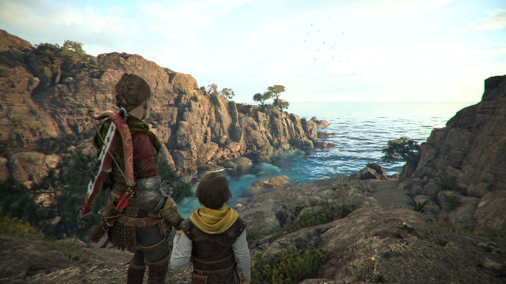
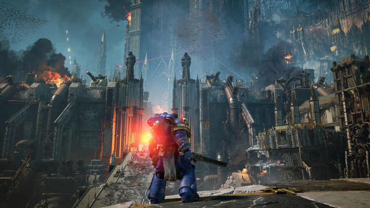
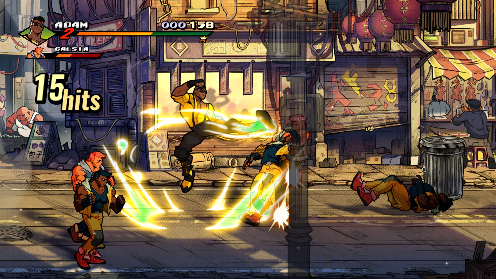

1. Des jeux qui racontent des histoires
Les jeux vidéo ont beaucoup évolué avec le temps. Avant, ils étaient surtout connus pour leur côté divertissant, alors qu'aujourd'hui certains jeux proposent des histoires aussi développées que celles des films ou des livres. Les personnages, les décors et les musiques permettent aux joueurs de mieux rentrer dans l'univers du jeu.
PullUp Entertainment propose plusieurs jeux qui donnent une grande importance à l'histoire. C'est notamment le cas de A Plague Tale, qui raconte l'aventure d'Amicia et de son petit frère Hugo dans une France médiévale touchée par la peste. Tout au long du jeu, les personnages doivent survivre à différents dangers.
Ce jeu aborde plusieurs sujets comme la famille, la peur, la solidarité et les difficultés de la survie. Le joueur ne fait donc pas seulement avancer son personnage, il découvre également une histoire qui peut provoquer des émotions. Cela montre que le jeu vidéo peut être considéré comme une forme de création culturelle.

2. Une culture qui rassemble les joueurs
Le jeu vidéo permet également de réunir des personnes qui partagent les mêmes centres d'intérêt. Aujourd'hui, les joueurs peuvent discuter entre eux sur les réseaux sociaux, regarder des vidéos, suivre des créateurs de contenu ou encore jouer ensemble en ligne.
PullUp Entertainment participe à cette culture avec des jeux comme Warhammer 40,000: Space Marine 2. Ce jeu se déroule dans un univers de science-fiction déjà connu grâce aux figurines, aux romans et aux jeux de plateau Warhammer. Il permet donc de faire découvrir cet univers à des personnes qui ne le connaissaient pas.
Space Marine 2 propose aussi un mode coopératif dans lequel plusieurs joueurs peuvent réaliser des missions ensemble. Cela encourage le travail en équipe, la communication et le partage d'expériences entre les joueurs.
Les communautés de fans continuent également de faire vivre les jeux après leur sortie. Elles partagent des conseils, des vidéos, des créations et leurs avis. Le jeu vidéo devient alors un loisir collectif qui dépasse le simple fait de jouer.

3. La créativité dans le jeu vidéo
La création d'un jeu vidéo demande beaucoup de travail et fait intervenir plusieurs métiers. Il faut des développeurs pour programmer le jeu, des graphistes pour créer les personnages et les décors, des scénaristes pour écrire l'histoire et des musiciens pour créer les sons et les ambiances.
PullUp Entertainment travaille avec différents studios qui possèdent chacun leur propre style. Cela permet au groupe de proposer des jeux très différents, aussi bien dans leur apparence que dans leur manière de jouer.
On peut prendre l'exemple de Streets of Rage 4, édité par Dotemu, qui fait partie du groupe. Ce jeu reprend une ancienne série très connue dans les années 1990. Il garde le principe des combats des anciens jeux tout en proposant des graphismes modernes et une nouvelle bande-son.
Cet exemple montre que les studios peuvent s'inspirer d'anciens jeux tout en apportant de nouvelles idées. La créativité permet donc de faire évoluer le jeu vidéo sans forcément oublier son histoire.

4. L'influence du jeu vidéo sur la société
Le jeu vidéo prend aujourd'hui de plus en plus de place dans la société. Il est présent sur les ordinateurs, les consoles et les téléphones. Il touche différentes générations et peut réunir des personnes de plusieurs pays.
Il influence aussi d'autres domaines culturels comme le cinéma, la musique ou la littérature. Certains univers de jeux vidéo sont adaptés en films ou en séries, tandis que d'autres s'inspirent directement de livres, de bandes dessinées ou d'événements historiques.
Pour PullUp Entertainment, cette évolution représente une manière de toucher un public plus large. En proposant des jeux variés, le groupe peut attirer aussi bien les amateurs de jeux d'action que les personnes qui préfèrent les histoires ou les jeux de simulation.
Conclusion
Pour conclure, PullUp Entertainment occupe une place dans la culture du jeu vidéo grâce à la diversité de ses productions. Ses jeux permettent de raconter des histoires, de rassembler des communautés et de mettre en avant le travail artistique des studios. Le groupe montre ainsi que le jeu vidéo n'est pas seulement un divertissement, mais aussi un moyen de création et de partage.